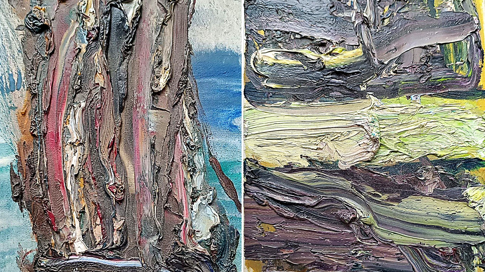

Цвет · Янита
Цвет — язык души
Цвет не объясняет, он дотрагивается до сердца. Как оттенок открывает двери памяти, веселая практика на выходные и что почитать и посмотреть про цвет.
Читать →
Как устроено · Елена
Дверь как метафора: девять предметов и девять вопросов
Почему дверь стала главным образом проекта и что означают девять предметов, которые протягивает рука. С короткой библиотекой: ван Геннеп, Тёрнер, Башляр, Макклауд.
Читать →